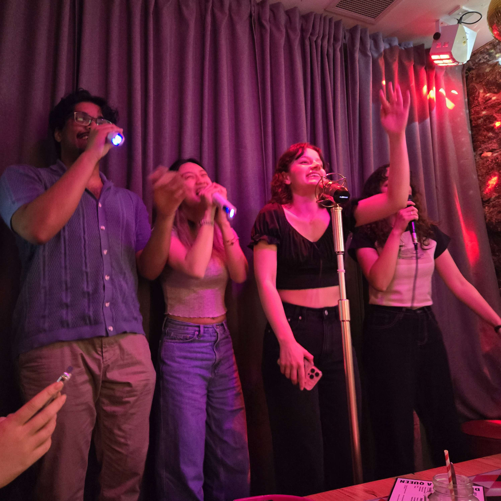

All-rounder Activities!

Welcome to the Activity Page!
I mostly just play games and watch videos in my free time, so most the activities I do in Melbourne are group activities I do together with friends. And fortunately, Melbourne Has many activities to choose from.
Activities I Recommend:
Some activities I’ve done in Melbourne include:
- Attend events held at Fed Square,
- Play party games at gaming bars/lounges
- Take pictures in photo booths
- And lots of Karaoke!
About the Picture
I've found Karaoke to be, by far, the most fun activity you can do in Melbourne, but then again, that may be subject to change. The picture above features my friends during a karaoke session we had together.